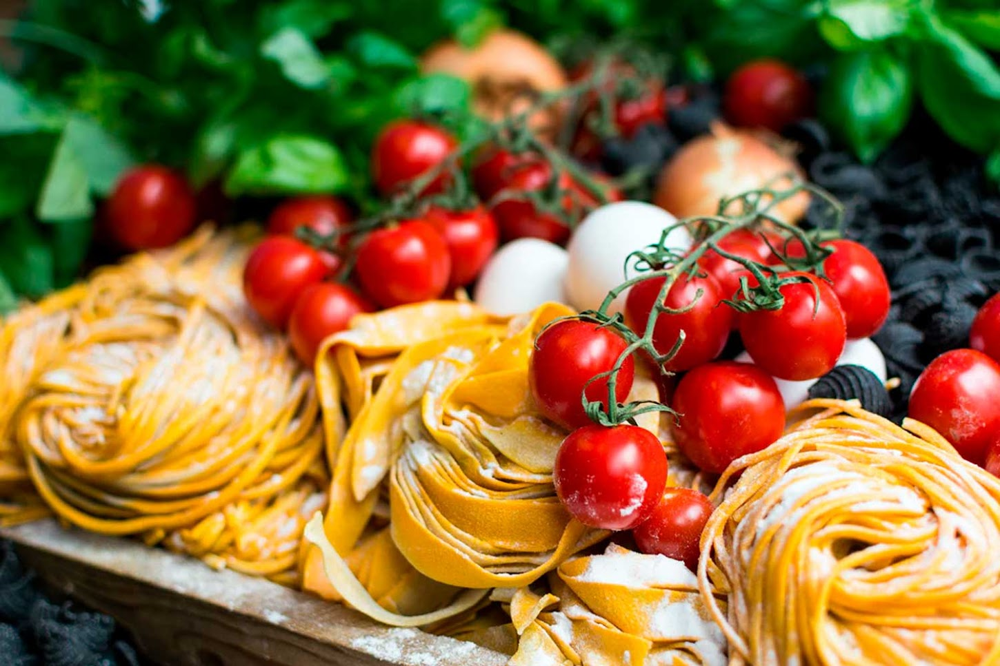

|  | está pagina está destinada a falar sobre refeição italiana para você fazer em sua casa | |
receita
pizza
é um dos pratos mais populares da italia, por isso escolhemos falar sobre essa receita maravilhosa
ingredientes:farinha, fermento biologicos,oleo, uma pitada de sal, ovos, a quantidade de ingredientes podem variar do tamanho de sua receita
tempo de descanso; para ter uma massa de pizza maior é importante deixar de 30 a 40 minutos
fure a massa; ao colocar a massa pra assar fura-lá com um garfo ou palito
não esqueça o molho; uma dica para uma pizza mais gostosa é colocar o molho no centro da pizza, assar junto com a massa que irá absorver o molho e ficar mais saborosa
| Receitas tipicas | ||
|---|---|---|
| risotto | pizzaravioli | spaghetti | lasagna